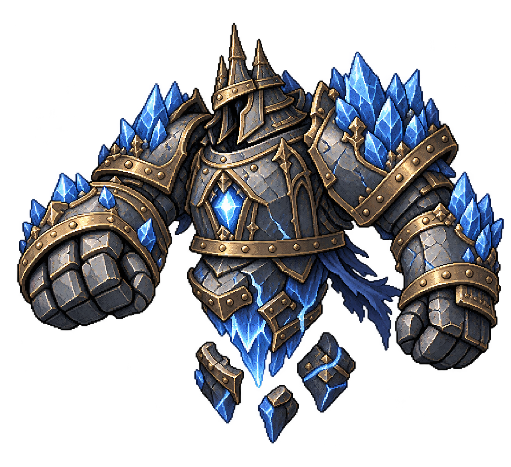

넓은 어깨와 거대한 주먹, 짧은 몸통. 하체는 얼음 핵과 떠 있는 장갑 조각으로 새로 만들었다.

높이 290 · 원본 비율 유지 · 바닥에서 10만큼 띄우고 상하 2 이내로 움직인다. 팔이 붙어 있는 전신 4프레임으로 대기 → 준비 → 타격 → 복귀를 재생한다. 팔을 따로 이동·회전시키지 않는다. 어두운 철갑과 남색 천의 원화 재질을 참고해 색감을 보정했다.